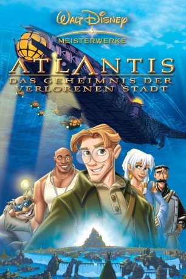

gesehen am 06.02.2016
gesehen am 06.02.2016Alternativ: Atlantis: The Lost Empire gesehen am 06.02.2016
 
 IMDB-Wertung: 6.9 / 10
IMDB-Wertung: 6.9 / 10  Metascore:
Metascore: 
Der junge Milo Thatch, ein tollpatschiger Sprachwissenschaftler, begibt sich auf die gefährliche Suche nach dem lange verlorenen Atlantis. Bei ihm ist ein Team etwas sonderbarer Experten: der “durchgeknallte” Sprengmeister Vinny, die schlagfertige Anna, der Spaßmacher Boudelaire, Erd-Buddler aus Leidenschaft, und einige andere kuriose Typen. Milo’s kühnste Erwartungen werden übertroffen, als er und sein Team Atlantis und dessen Bewohner entdecken. Doch er hat nicht lange Zeit, mit der faszinierenden atlantischen Prinzessin Kida das atemberaubende Unterwasserreich zu erkunden, denn der skrupellose Expeditionsführer Rourke versucht, die geheimnisvolle Energiequelle von Atlantis in seine Gewalt zu bringen. Werden es Milo und Kida schaffen, Atlantis vor dem entgültigen Untergang zu bewahren können?
Jahr: 2001
Dauer: 95 Minuten
FSK: 6
Land: USA Studio: Buena Vista PicturesTonspuren:
Untertitel: Deutsch,
Auflösung: 1080p (1920x816) Größe: 4689 MB
Genre: Action, Sci-Fi, Abenteuer, Fantasy, Animation/Trick, Familie
Regisseur: Gary Trousdale, Kirk Wise
Drehbuch: Tab Murphy, Kirk Wise, Gary Trousdale, Joss Whedon, Bryce Zabel
Soundtrack: James Newton Howard
Darsteller:
 Michael J. Fox als Milo James Thatch
Michael J. Fox als Milo James Thatch Corey Burton als Gaetan 'The Mole' Moliere
Corey Burton als Gaetan 'The Mole' Moliere James Garner als Commander Lyle Tiberius Rourke
James Garner als Commander Lyle Tiberius Rourke John Mahoney als Preston B. Whitmore
John Mahoney als Preston B. Whitmore Phil Morris als Dr. Joshua Strongbear Sweet
Phil Morris als Dr. Joshua Strongbear Sweet Leonard Nimoy als King Kashekim Nedakh
Leonard Nimoy als King Kashekim Nedakh Don Novello als Vincenzo 'Vinny' Santorini
Don Novello als Vincenzo 'Vinny' Santorini David Ogden Stiers als Fenton Q. Harcourt
David Ogden Stiers als Fenton Q. Harcourt Cree Summer als Princess 'Kida' Kidagakash
Cree Summer als Princess 'Kida' Kidagakash Jim Varney als Jebidiah Allardyce 'Cookie' Farnsworth
Jim Varney als Jebidiah Allardyce 'Cookie' Farnsworth Jim Cummings als Additional Voices
Jim Cummings als Additional VoicesDatei: X:\Kinder Disney HD\Atlantis\Atlantis - Das Geheimnis der verlorenen Stadt (2001, FSK6, 1920x816).mkv seit 08.09.2015
Festplatte: Kinder-Filme+Trick
 Alle Filme aus Gruppe 'Kinder Disney HD\Atlantis'
Alle Filme aus Gruppe 'Kinder Disney HD\Atlantis'